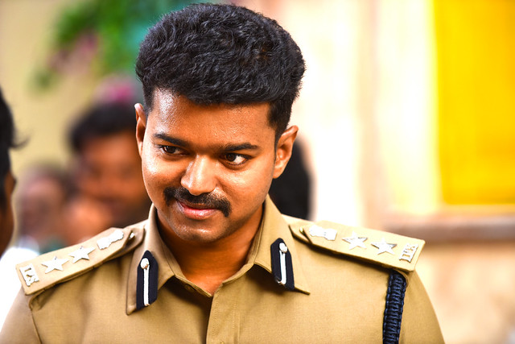
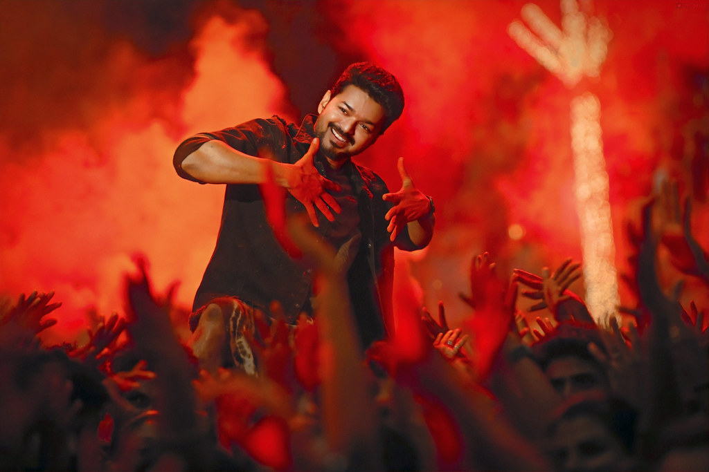
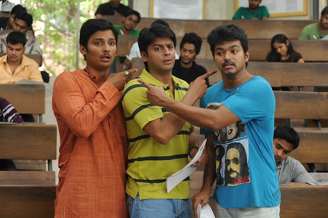

Home About History Movies Awards Contact

Vijay, popularly known as “Thalapathy Vijay,” is one of the most celebrated actors in the Tamil film industry and a rising political leader in Tamil Nadu. Born on June 22, 1974, in Chennai, he is the son of film director S. A. Chandrasekhar and playback singer Shoba Chandrasekhar. Vijay started his acting career as a child artist and later became a leading hero in Tamil cinema through his dedication, talent, and powerful screen presence.
Over the years, Vijay has acted in many blockbuster movies such as Ghilli, Thuppakki, Mersal, Master, Leo, and Varisu. His films are known for action, entertainment, emotional storytelling, and social messages. Vijay has a huge fan following across India and around the world. His energetic dance performances, stylish acting, and motivational dialogues have made him a favorite among audiences, especially young people.
Apart from cinema, Vijay is also known for his social service activities. Through his fan clubs and welfare organizations, he has helped people during floods, health emergencies, and educational needs. His interest in public welfare and social development led him to enter politics officially.
In 2024, Vijay launched his political party named Tamilaga Vettri Kazhagam (TVK). The party focuses on youth empowerment, education, equality, anti-corruption, and the development of Tamil Nadu. Vijay announced that his goal is to work for the people and bring positive changes to society. His entry into politics created a major impact in Tamil Nadu, attracting the attention of both the public and political leaders.
Vijay is admired not only for his success in cinema but also for his humility, discipline, and commitment to social causes. He continues to inspire millions of fans through his achievements, leadership qualities, and vision for the future. Today, Vijay stands as an influential personality in both the entertainment industry and public life, making him one of the most important figures in Tamil Nadu.

Vijay, whose full name is Joseph Vijay Chandrasekhar, is an Indian actor and politician. He was born on June 22, 1974, in Chennai, Tamil Nadu. Vijay is the son of film director S. A. Chandrasekhar and playback singer Shoba Chandrasekhar. He started his acting career as a child artist in the early 1980s and later transitioned to lead roles in Tamil cinema. Over the years, he has become one of the most popular and influential actors in the industry, known for his charismatic screen presence and versatile acting skills.
Vijay, popularly called “Thalapathy Vijay,” is a famous Indian actor, playback singer, and politician who mainly works in the Tamil film industry. He was born on June 22, 1974, in Chennai, Tamil Nadu. His father, S. A. Chandrasekhar, is a film director, and his mother, Shoba Chandrasekhar, is a playback singer. Vijay began his acting journey as a child artist and later became one of the top stars in South Indian cinema.
Vijay made his debut as a lead actor in the movie Naalaiya Theerpu in 1992. After several successful films, he gained massive popularity through blockbuster movies like Ghilli, Pokkiri, Thuppakki, Mersal, Master, Beast, Varisu, and Leo. His movies are loved for their action scenes, emotional stories, songs, and powerful dialogues. Vijay is also well known for his dancing skills and energetic performances.
Apart from acting, Vijay is respected for his social service activities. He has supported students, helped people during natural disasters, and encouraged educational programs through his welfare organizations and fan clubs. His fans admire him not only as an actor but also as a role model.
In 2024, Vijay officially entered politics by launching his political party called Tamilaga Vettri Kazhagam (TVK). His aim is to serve the people of Tamil Nadu and work for social welfare, education, equality, and youth development. His political entry received huge attention across the state.
Today, Vijay is considered one of the most influential personalities in Tamil Nadu. With his success in cinema, strong fan base, and growing political presence, he continues to inspire millions of people.
Vijay, whose full name is Joseph Vijay Chandrasekhar, was born on June 22, 1974, in Chennai, Tamil Nadu. He is the son of film director S. A. Chandrasekhar and playback singer Shoba Chandrasekhar. Vijay started his acting career as a child artist in the early 1980s, appearing in several films directed by his father. His first lead role came in the movie Naalaiya Theerpu in 1992, which marked the beginning of his journey as a leading actor in Tamil cinema.
Over the years, Vijay has acted in numerous successful films that have contributed to his rise as one of the most popular actors in the industry. Some of his notable movies include Ghilli (2004), Pokkiri (2007), Thuppakki (2012), Mersal (2017), Master (2021), Beast (2022), Varisu (2023), and Leo (2024). These films are known for their action sequences, emotional storytelling, catchy songs, and powerful dialogues that resonate with audiences.
In addition to his film career, Vijay has been actively involved in social service activities. He has supported various charitable causes through his welfare organizations and fan clubs, providing assistance during natural disasters and promoting educational initiatives. His dedication to social welfare has earned him respect and admiration from fans and the public alike.
In 2024, Vijay made a significant move by entering politics. He launched his political party called Tamilaga Vettri Kazhagam (TVK) with the aim of serving the people of Tamil Nadu and working towards social welfare, education, equality, and youth development. His entry into politics created a major impact in the state, attracting attention from both the public and political leaders.
Today, Vijay continues to be an influential figure in both the entertainment industry and public life. With his successful film career and growing political presence, he remains a source of inspiration for millions of fans across India and around the world.
Vijay has acted in many successful movies throughout his career. Some of his most popular films include

Vijay has received several awards and nominations for his outstanding performances in the film industry. Some of the notable awards he has won include:
To contact Vijay, you can reach out through his official social media accounts or his political party's website. Here are some ways to connect with him: